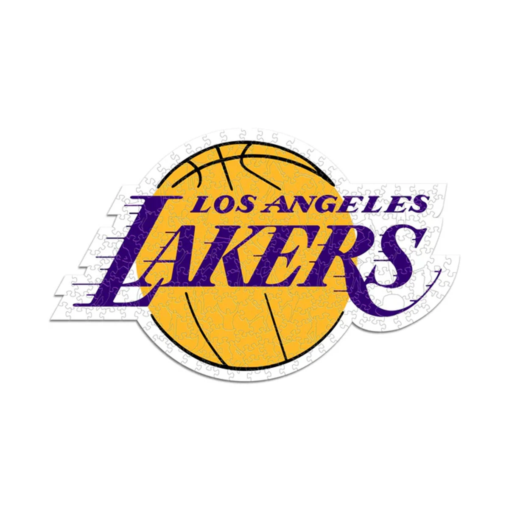
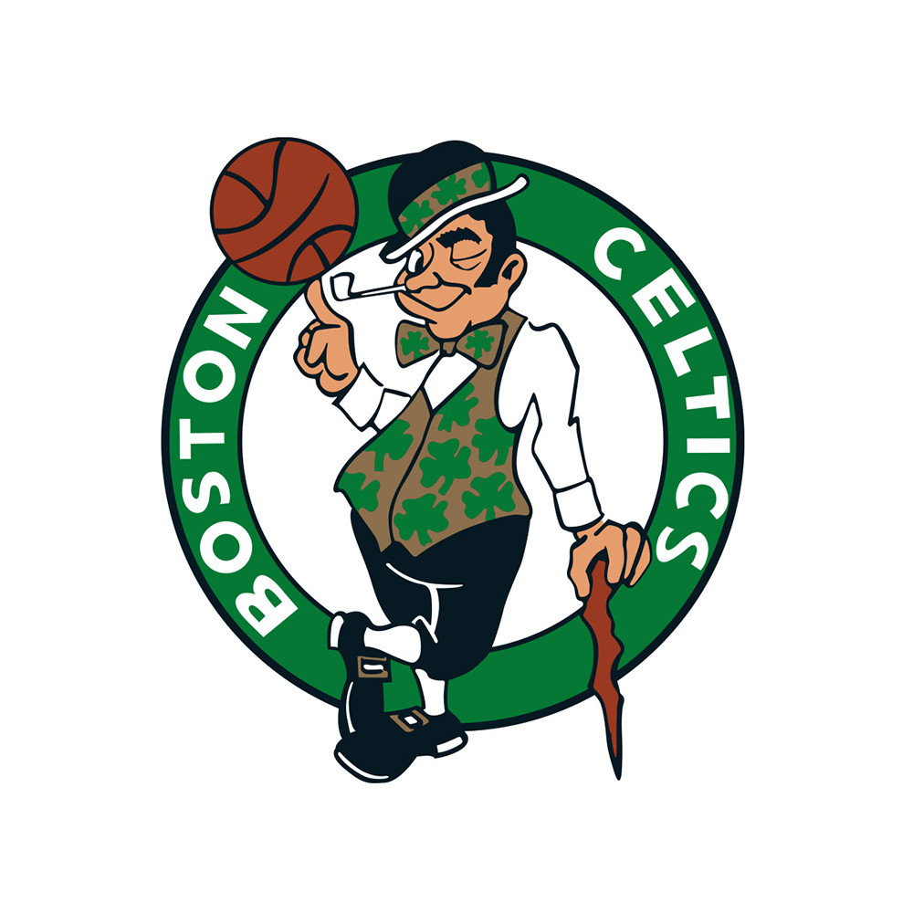
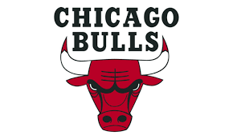
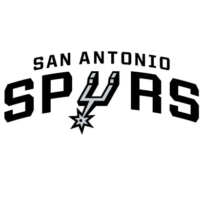

Mejores equipos de la NBA
1. Los Angeles Lakers
Los Lakers son uno de los equipos más exitosos en la historia de la NBA con 17 campeonatos. Fundados en 1947, han sido hogar de leyendas como Magic Johnson, Kareem Abdul-Jabbar y Kobe Bryant.
Jugadores Destacables:
- LeBron James - Una de las mayores leyendas del baloncesto
- Anthony Davis - Pivote dominante en ambos lados de la cancha
- Austin Reaves - Joven talento en ascenso


2. Boston Celtics
Los Celtics tienen el récord de más campeonatos de la NBA con 18 títulos. Son conocidos por su histórica rivalidad con los Lakers y por leyendas como Bill Russell, Larry Bird y Paul Pierce.
Jugadores Destacables:
- Jayson Tatum - Estrella y líder del equipo
- Jaylen Brown - Escolta All-Star de élite
- Kristaps Porzingis - Pivote versátil con gran tiro exterior
3. Chicago Bulls
Los Bulls dominaron la NBA en los años 90 con Michael Jordan, ganando 6 campeonatos. Su dinastía con Jordan, Pippen y Rodman es considerada una de las mejores de todos los tiempos.
Jugadores Destacables:
- Zach LaVine - Escolta explosivo y gran anotador
- DeMar DeRozan - Veterano All-Star
- Nikola Vucevic - Pivote sólido con buen tiro

4. Golden State Warriors
Los Warriors revolucionaron el baloncesto moderno con su estilo de juego basado en el triple. Han ganado 7 campeonatos en total, incluyendo 4 en la última década con Stephen Curry.
Jugadores Destacables:
- Stephen Curry - El mejor tirador de triples en la historia
- Klay Thompson - Escolta defensivo y gran tirador
- Draymond Green - Líder defensivo y corazón del equipo

5. San Antonio Spurs
Los Spurs son conocidos por su consistencia y excelencia durante más de 20 años bajo el mando del entrenador Gregg Popovich. Han ganado 5 campeonatos con Tim Duncan como su líder histórico.
Jugadores Destacables:
- Victor Wembanyama - Fenómeno francés de 2.24m, futuro de la NBA
- Devin Vassell - Escolta joven con gran potencial
- Keldon Johnson - Keldon Johnson - Alero versátil y enérgico
